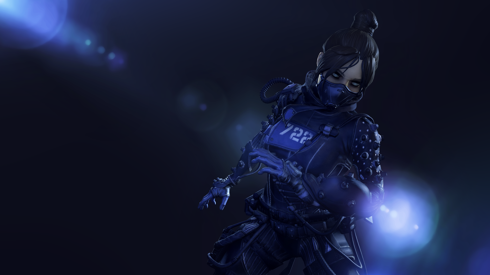

My name is Mythicaalx or Mythical (Myth for short), I'm 26 years old and based in Norway.
I have ASD (Autism Spectrum Disorder) and social anxiety and that's probably why videogames have been such a huge part of my life. It's a kind of escape from reality and a way for me to take a break and actually relax completely.
I've been playing videogames since I was a kid and it has always been one of my biggest passions. I see myself as kind of a geek and loner, but I find comfort in games and I've made friends from all over the world. I have also improved my english by speaking with other gamers, such as americans, british people, other europeans and so on.
Besides from videogames and gaming in general, I also enjoy watching movies and tv shows, I love to paint and I also have a passion for photography.
What games do I play?
- Apex Legends
- Spyro Reignited Trilogy
- The Sims 4
- Fall Guys
- Fortnite
- Borderlands 3
- Call of Duty: Warzone

Picture of Wraith, a character from Apex legends. The character I use the most in the game.
(Song: Apex Legends: Main Theme by Stephen Barton)